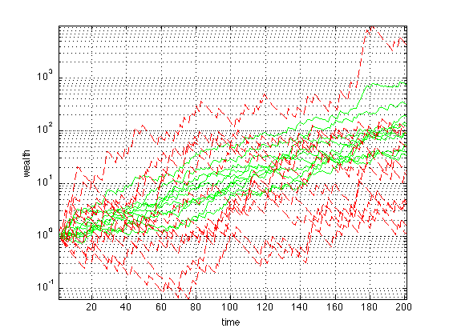

Exercise 4.60: Log-optimal investment strategy
P = [3.5000 1.1100 1.1100 1.0400 1.0100;
0.5000 0.9700 0.9800 1.0500 1.0100;
0.5000 0.9900 0.9900 0.9900 1.0100;
0.5000 1.0500 1.0600 0.9900 1.0100;
0.5000 1.1600 0.9900 1.0700 1.0100;
0.5000 0.9900 0.9900 1.0600 1.0100;
0.5000 0.9200 1.0800 0.9900 1.0100;
0.5000 1.1300 1.1000 0.9900 1.0100;
0.5000 0.9300 0.9500 1.0400 1.0100;
3.5000 0.9900 0.9700 0.9800 1.0100];
[m,n] = size(P);
Pi = ones(m,1)/m;
x_unif = ones(n,1)/n;
cvx_begin
variable x_opt(n)
maximize sum(Pi.*log(P*x_opt))
sum(x_opt) == 1
x_opt >= 0
cvx_end
R_opt = sum(Pi.*log(P*x_opt));
R_unif = sum(Pi.*log(P*x_unif));
display('The long term growth rate of the log-optimal strategy is: ');
disp(R_opt);
display('The long term growth rate of the uniform strategy is: ');
disp(R_unif);
rand('state',10);
N = 10;
T = 200;
w_opt = []; w_unif = [];
for i = 1:N
events = ceil(rand(1,T)*m);
P_event = P(events,:);
w_opt = [w_opt [1; cumprod(P_event*x_opt)]];
w_unif = [w_unif [1; cumprod(P_event*x_unif)]];
end
figure
semilogy(w_opt,'g')
hold on
semilogy(w_unif,'r--')
grid
axis tight
xlabel('time')
ylabel('wealth')
Successive approximation method to be employed.
For improved efficiency, sedumi is solving the dual problem.
sedumi will be called several times to refine the solution.
Original size: 36 variables, 15 equality constraints
10 exponentials add 80 variables, 50 equality constraints
-----------------------------------------------------------------
Errors
Act Centering Conic Status
-----------------------------------
10 1.053e+00 9.526e-02 Solved
10 4.585e-02 1.734e-04 Solved
10 1.014e-03 1.846e-07 Solved
10 1.219e-04 6.879e-08 Solved
10 1.520e-05 6.382e-08S Solved
10 1.623e-05S 1.479e-08 Solved
10 1.402e-05 0.000e+00 Solved
-----------------------------------------------------------------
Status: Solved
Optimal value (cvx_optval): +0.0230783
The long term growth rate of the log-optimal strategy is:
0.0231
The long term growth rate of the uniform strategy is:
0.0114
